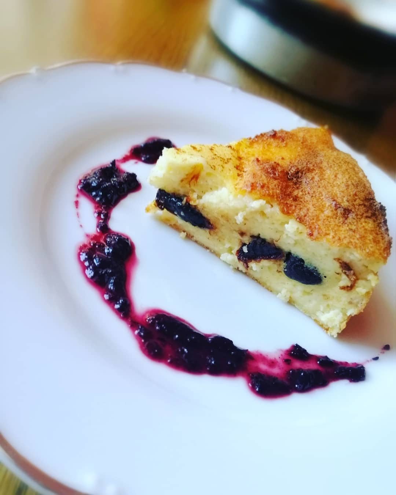

Krupicový nákyp podľa @salabova — Normy Jedál
#homemade #cooking #lunch #baked #sweets #semolina #pudding #plum #typic #czech #food #foodstyling #insta #instafood #instafoodcz #instagram #czechfood
Další zapomenutá fotka jídla, ale dost důležitá. Dávám občas # jako od babičky a tohle jídlo, to splňuje víc než na 100%
O tomhle jídlu, čímž je KRUPICOVÝ NÁKYP, jsem zatím jen slýchávala od své dnes již 81leté maminky. Jak jí ho dělala maminka a babička. Až jednou... Přiznám se bez mučení, dělaly jsme ho spolu. To víte, maminka je v tomto ohledu odborník. Já ho nikdy nejedla. Je uvnitř plný sušených švestek a másla. Tak, že to byla při pečení vůně. A jako bonus při vzpomínání se pekl ve staré remosce @remoska_official co víc si při vzpomínání u vaření přát. Nákyp jsem dozdobila domácí zdravou zavařenunou z aronie.
#pecurada #pecemeslaskou #pecenijeradost #pojdsenajist #krupicovynakyp #nakyp #sladke #sladkosti #jakoodbabicky #upeceno #domaupeceno